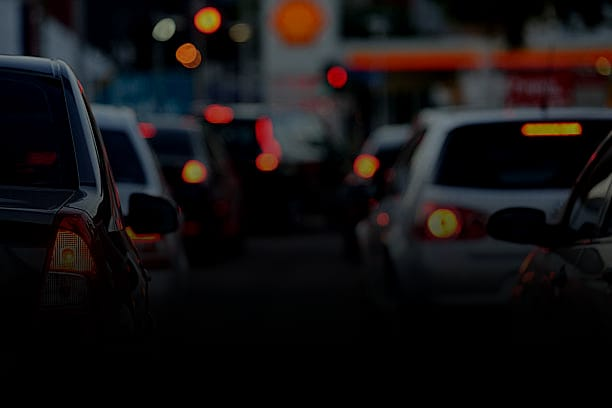

Mais de 40 Mil Pessoas Morrem no Trânsito Todos os Anos - Será Que Você Está Contribuindo?

Um movimento internacional de conscientização para a redução de acidentes de
trânsito, que nasceu do Brasil em maio de 2014. O trânsito deve ser seguro para
todos em qualquer situação.
Colocar em pauta para a sociedade o tema trânsito voltado para a segurança e a
preservação da vida. Estimulara participação da população, organizações,
empresas, instituições, entidades e poder público de forma conjunta.
Porque foi em maio que a ONU (Organização das Nações Unidas), decretou a Década
de Ações para a Segurança no Trânsito (2011-2020), em 11 de maio de 2011. Com isso,
o balanço das ações é sempre realizado em maio no mundo todo. A meta brasileira era
baixar de 23 mortes para cada 100 mil habitantes, para 11 mortes até 2020.
Porque o amarelo é a cor da advertência no trânsito. Placas amarelas alertam o
motorista sobre possiveis perigos à sua frente. A cor amarela do semáforo significa
atenção! O amarelo é o sinal de alerta no trânsito em todo o mundo!
Mesmo em baixas velocidades, o cinto diminui o impacto e aumenta a chance de sobrevivência, protegendo os ocupantes de ferimentos mais graves em caso de colisões.
O cinto de segurança é obrigatório para todos os ocupantes do veículo, inclusive no banco traseiro. Em casos de acidente, o cinto evita que os passageiros sejam jogados para fora do
veículo ou contra outras partes do carro, reduzindo consideravelmente o risco.
Em áreas urbanas, onde o trânsito é intenso e há pedestres, é importante respeitar a velocidade para evitar atropelamentos e colisões.
Nas rodovias, onde as velocidades maiores são permitidas, é fundamental reduzir a velocidade em curvas e em áreas de menor visibilidade.
Evitar o uso do celular durante o deslocamento é essencial, pois uma simples olhada pode resultar em um acidente grave, colocando em risco não apenas a sua vida, mas também a segurança de passageiros, pedestres e outros motoristas. Priorizar a atenção total ao volante é fundamental para garantir uma condução
Evite realizar outras atividades enquanto estiver dirigindo. Não devemos mexer no celular nem na central multimídia do veículo durante a condução. Caso seja algo urgente, o recomendado é parar o veículo em um local seguro.
Não devemos consumir álcool e drogas antes de dirigir, pois essas substâncias comprometem o julgamento e diminuem a coordenação motora, aumentando significativamente o risco de acidentes graves.
O uso de álcool e drogas no trânsito distorce a percepção do motorista, tornando-o incapacitado de tomar decisões seguras. Por isso, é fundamental evitar essas substâncias para proteger sua segurança e a de todos os que compartilham a via.
A direção defensiva é importante porque, ao manter a atenção e antecipar riscos, você pode evitar acidentes, mesmo quando outros motoristas não estão atentos à estrada.
Com essa postura, é possível reagir a tempo a situações inesperadas.